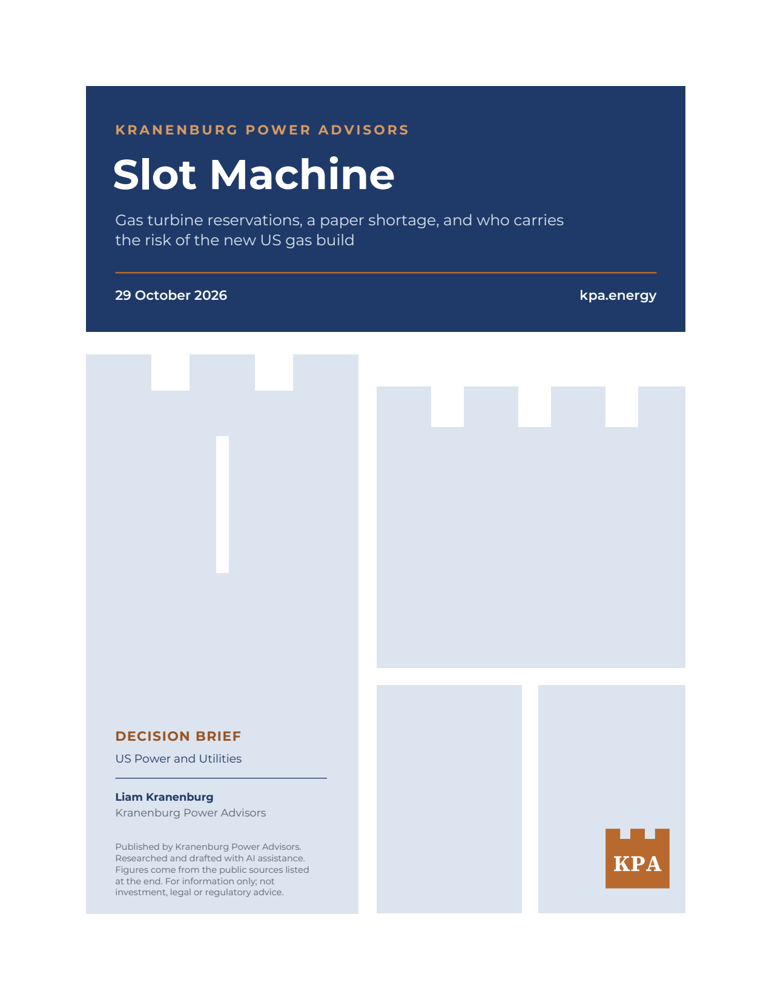
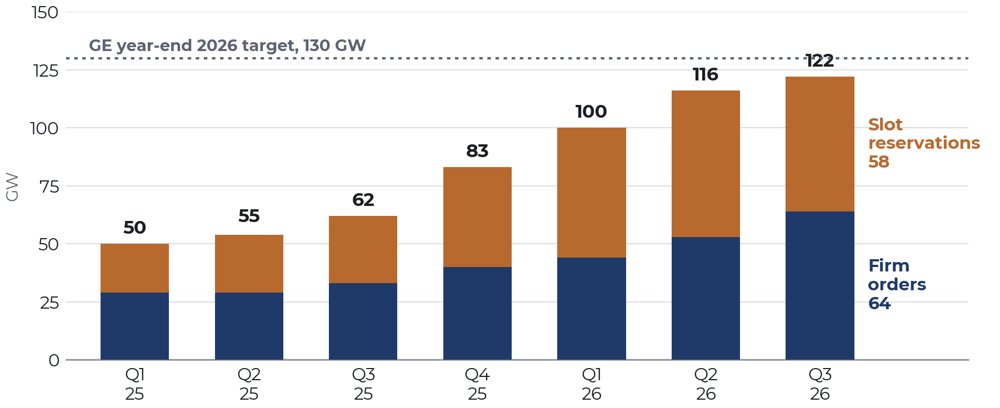
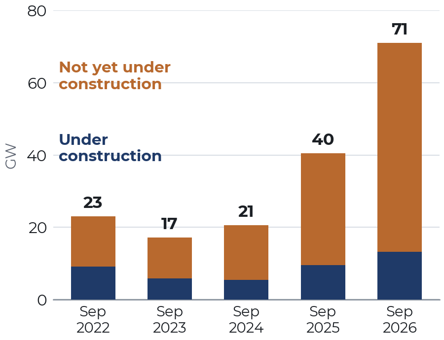
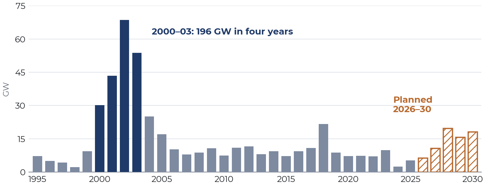
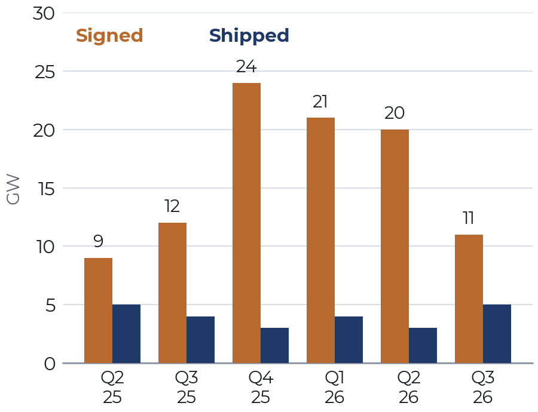

Slot Machine
Gas turbine reservations, a paper shortage, and who carries the risk of the new US gas build

Key implications
On 28 October, GE Vernova reported 122 gigawatts (GW) of gas turbines on firm order or reserved, up from 50 GW in March 2025. In times past, an order book of that size would have meant a wave of power plants: turbines ordered, permits filed, and steel rising within two or three years. Yet the field is lagging the factory. Of the 64 GW of US gas capacity planned for 2027–30, 15% is under construction; 58% has not yet sought regulatory approval; and of the gas planned for 2025–27 at the end of 2023, almost a third has since been canceled or postponed. KPA analysis shows why. Much of the turbine shortage is a shortage of reservations—paid options on factory time—and in the third quarter those options began hardening into firm orders faster than new ones were signed. The question is no longer only whether turbines can be found, but who holds the risk once a reservation becomes an obligation.
- The binding queue for new gas plants has moved from the grid to the factory. GE's 122 GW is about six years of its current output; on its own expansion plan, the book would not be fully delivered until around mid-2031. In the third quarter, GE sold several slots for delivery in 2032. Siemens Energy holds a further 69 GW, more than four years of its deliveries.
- The shortage is real at the factory but partly paper in the field. Planned US gas capacity has risen 3.5 times in two years, to 71 GW, while capacity under construction rose from 5 GW to 13 GW. Of the gas plans on record for 2025–27 at the end of 2023, about a third is operating today.
- As reservations harden into orders, the risk moves to the buyers and their customers. In the third quarter, GE converted 13 GW of reservations into orders and signed 8 GW of new ones. About 80% of its gas book is with utilities and other traditional customers. At 2025 costs, the combined-cycle plants now planned would cost at least $31 billion more than at 2023 costs.
—October 2026
KPA searched for prior publication of each finding before release. These results were not found in that search; everything else is credited to its source.
- GE's ratio of gas contracts signed to equipment shipped fell from 6.7 to 1 in the second quarter of 2026 to 2.2 to 1 in the third.
- Planned US gas capacity rose 3.5 times in two years in EIA's inventory, while the share under construction fell from 26% to 18%; 58% of 2027–30 plans have not begun regulatory approval.
- Of the gas EIA listed in December 2023 as planned for 2025–27, 34% is operating, 31% has been canceled or postponed, and 35% is still planned.
- Planned additions for 2028–30, about 18 GW a year, are little more than a third of the 2000–03 pace.
- At BloombergNEF's 2025 cost, the planned combined-cycle fleet costs at least $31 billion more than at 2023 costs.
Versions and corrections
No corrections so far.
Version 1.0 was published on 29 October 2026. Published numbers are never changed silently; each correction is dated and listed here and in the PDF.
Cite this brief
Kranenburg, Liam. “Slot Machine: Gas turbine reservations, a paper shortage, and who carries the risk of the new US gas build.” Kranenburg Power Advisors, KPA Brief no. 2, 29 October 2026, version 1.0. https://kpa.energy/briefs/slot-machine/
Charts
The four figures
Select a chart to open it full size.
Figure 1
GE Vernova's gas book more than doubled in 18 months, to 122 GW

Figure 2
Planned US gas capacity tripled; construction did not keep pace

Figure 3
Planned gas additions are a third of the 2000–03 pace

Figure 4
Signings fell toward shipments in the third quarter

Findings
Ten findings the brief stands on
Each one is recomputed from public data or credited to whoever published it first. Filter by theme, or draw one at random.
Sources
Where every number comes from
All public. The brief's own calculations are reproducible from these.
- GE Vernova, quarterly earnings releases, first quarter 2025 to third quarter 2026 (Form 8-K filings of 23 April 2025, 23 July 2025, 22 October 2025, 28 January 2026, 22 April 2026, 22 July 2026 and 28 October 2026); first-quarter 2025 earnings call, 23 April 2025 (down payments on reservations).
- GE Vernova, third-quarter 2026 earnings call, 28 October 2026, transcript by The Motley Fool (2032 slots, order pricing, customer count and mix, conversions, fourth-quarter guidance).
- B. Martucci, "GE Vernova gas turbine backlog climbs to 116 GW," Utility Dive, 23 July 2026 (2031 and 2032 contracting, customer mix, BNP Paribas estimates and comments).
- K. Clark, "Data centers drive record surge in GE Vernova power equipment orders as turbine slots tighten through 2030," Power Engineering, 23 April 2026 (customer mix, first-quarter signings, 2029–30 slots, lead times, factory additions, Strazik quotation).
- E. Penrod, "Siemens gas turbine backlog nears 70 GW as company expands manufacturing," Utility Dive, 10 August 2026.
- B. Noble (EPRI), op-ed in Utility Dive, 23 March 2026 (turbine lead times).
- US Energy Information Administration (EIA), Form EIA-860M, Preliminary Monthly Electric Generator Inventory, September 2022, September 2023, December 2023, September 2024, September 2025 and September 2026 editions.
- BloombergNEF, reported by Bloomberg, 23 April 2026 (US combined-cycle capital cost).
- EIA, "Grid infrastructure investments drive increase in utility spending over last two decades," Today in Energy, 18 November 2024 (transmission spending by major utilities, 2023, real 2023 dollars).
- R. Sansom and A. M. Schaal, "Gas Turbinemania: The Merchant Power Plant Shake Out," Public Utilities Fortnightly, 15 June 2002.
- NC Clean Energy Technology Center and Smart Electric Power Alliance, Database of Emerging Large-Load Tariffs (DELTa), second-quarter 2026 update, reported 1 September 2026 (37 states with approved or proposed tariffs or service rules); M. Lutz, "Large load tariffs proliferate as states take more active role in data center regulation," Utility Dive, 31 March 2026 (common tariff terms).
- KPA calculations (Figures 1–4, the order-book and delivery ratios, the EIA-860M vintage, status and cohort analysis, historical additions, and the cost premium) are reproducible from the figures in items 1–10.
- Prior work this brief builds on: Y. Kobayashi, XenoSpectrum, 20 October 2026 (GE backlog in years of output); EDF and Atlas Public Policy, 13 October 2026 (planned fossil capacity); munimv2, analysis of EIA-860M vintages, October 2026 (slippage of 2026 plans); D. DiGangi and M. Lutz, "What the last gas boom (and bust) says about today's rush to build," Utility Dive, 11 November 2025.
- KPA calls: GE Vernova releases, 22 July 2026 and 28 October 2026 (targets, conversions); Utility Dive, 23 July 2026 (2025 target and result); Power Engineering, 23 April 2026 (2029–30 slots); EIA Form 860M, September 2025 and September 2026 (status of planned gas).
Get the next brief
New briefs come out a few times a year. Ask to be added to the email list, or follow the RSS feed in any feed reader.